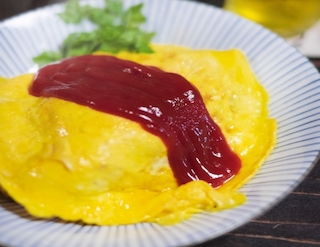

selfcook
オムライス

材料 １人前
＊チキンライス＊
＊トロトロたまご＊
作り方
＊チキンライス＊
- 1. お米を固めに炊きます。冷蔵庫で冷やしてもOK!
- 2. とり肉は一口小、玉ねぎはみじん切りに切ります
- 3. フライパンに油をひいて、中火にします
- 4. にんにくを入れて香りが広がってきたら、とり肉とたまねぎを入れます
- 5. 火が通ったら、ケチャップを入れます
- 6. ケチャップがグツグツしたら、お米を入れて塩とブラックペッパーで味を整えます
- 7. チキンライスをお皿に移します
＊トロトロたまご＊
- 1. バター以外の材料を混ぜます空気が入るように多めに混ぜてください！ふっくら仕上がります
- 2. 中火でフライパンにかけて、バターをひとまわします
- 3. バターが溶け切る前に卵を7割入れます
- 4. 10秒経ったら5秒菜箸でかき混ぜます
- 5. 残りの卵を外側から入れます
- 6. 液体が減ってきたら外側だけ火がかかるようにフライパンを回します
- 7. 菜箸で外側を剥がしながらチキンライスの上にかけます